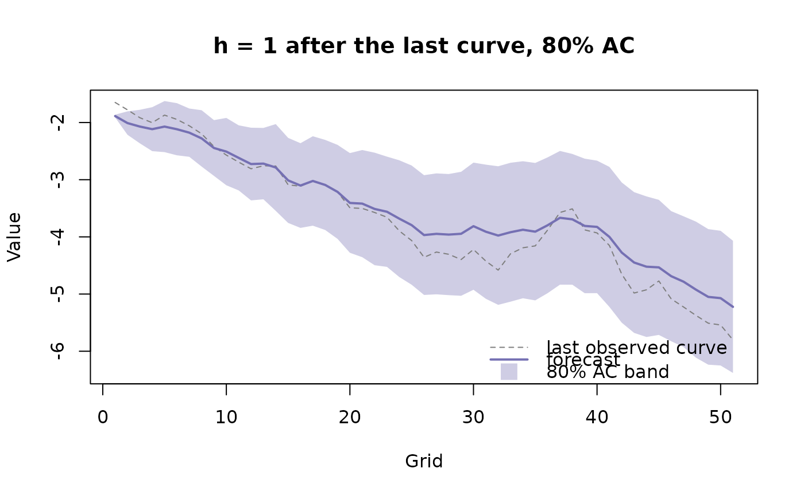
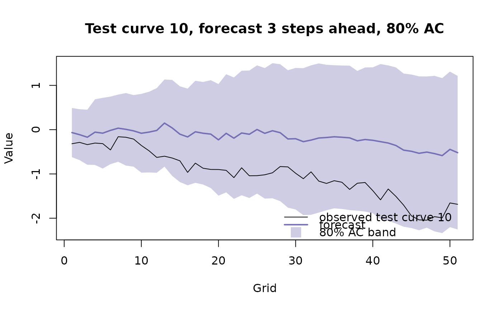

farfima: Order Selection and Forecasting in Long-Memory Functional Time Series
farfima-package.RdFits FARFIMA models to long-memory functional time series, selects their
orders and forecasts the curves with conformal prediction bands. Curves are
stored as a matrix with grid points in rows and time in columns. fts
objects from rainbow and ftsa also work.
Workflow
split_curves()splits the curves into training, validation and test samples, andplot_curves()draws them.farfima()fits the model. It estimates the memory parameter withestimate_memory(), selects the FARMA orders of the fractionally differenced curves as inselect_order(), estimates their operators as inestimate_operators(), and calibrates the conformal prediction bands on the validation sample.fitted()andresiduals()give the in-sample fit, andplot()draws it.predict()forecasts from the fit, with conformal prediction bands, and evaluates the forecasts on a test sample.plot()visualises the forecasts, andas.data.frame()puts them in a table.
Other functions
estimate_memory(),select_order()andestimate_operators(): the steps offarfima(), which can also be run on their own.select_order()andestimate_operators()take short-memory curves, such as fractionally differenced curves.frac_diff(): fractional differencing.sim_farfima(): simulated long-memory functional time series.
Author
Chang Liu, Han Lin Shang, Garth Tarr and Samuel Müller. Maintainer: Chang Liu chang.liu45@students.mq.edu.au
Examples
sim = sim_farfima(n = 200, d = 0.3, p = 1, q = 1, no_grid = 51, seed = 1)
blocks = split_curves(sim, train = 0.6, valid = 0.2)
fit = farfima(blocks$train, blocks$valid, d = "lpwn2", order = "ic_full",
p = 0:2, q = 0:2, h = 5, trim = 30)
#> Selecting (p, q) by functional IC over 8 candidates
#> Calibrating the SR, NS, AC bands on 40 validation origins (36 at h = 5)
fc = predict(fit, test = blocks$test, band = "AC")
#> Evaluating on 40 test origins
fc
#> Forecasts from FARFIMA(p = 1, d = 0.3084, q = 0)
#> Horizons: h = 1..5 after curve 200 (expanding window)
#> Bands: AC (adaptive conformal)
#> Levels: 80%, 95%
#>
#> Test evaluation over 40 test curves, averaged over horizons:
#> RMSPE = 1.135, MAPE = 0.8865
#> band level ECP CPD MIS
#> AC 80% 0.7522 0.04780 3.867
#> AC 95% 0.9173 0.03271 5.485
#> WIS: AC = 0.3868
plot(fc, h = 1)

plot(fc, h = 3, target_test_curve = 10)
